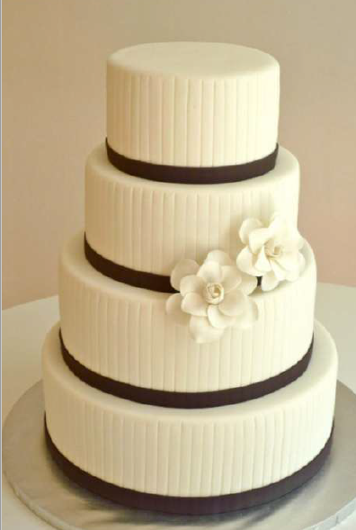
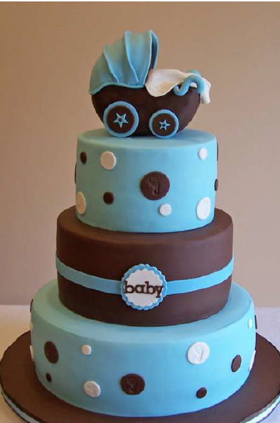
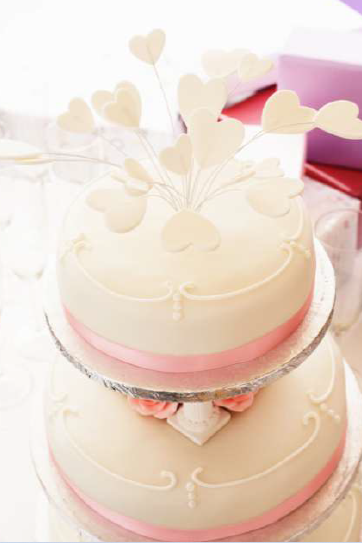
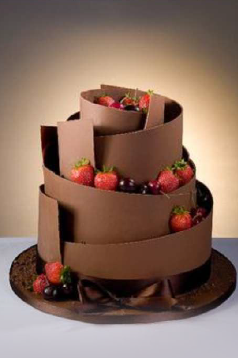
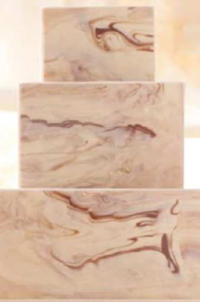

Cubierta Gamuzada
Ingredientes
- 6 Cdas. De glicerina.
- 6 Cdas. De agua.
- 1 1/2 Cdas, De gelatina sin sabor.
- 1 Cda. De glucosa.
- 2 Cdas. De manteca.
- 1/4 de Cda. De esencia.
- 1 Kg De azúcar pulverizada.
PREPARACIÓN Paso 1. Colocar el agua en una olla, agregar la gelatina con forma de lluvia, remueva un poco y lleve al fuego. Añada poco a poco los demás ingredientes excepto la azúcar pulverizada. Poner a fuego bajo no permita que hierva. Paso 2. Cuando ya esté todo bien integrado retire del fuego y vierta esta preparación sobre la mitad de la azúcar pulverizada (5009) previamente cernida y colocada en un recipiente profundo. Remueva con cuchara de madera. Paso 3. Coloque el resto de la azúcar pulverizada sobre una mesa firme y lisa (colocar manteca y maicena para que no se pegue la masa), vierta la preparación anterior sobre ella y amase hasta obtener una masa suave que no se pegue de las manos. Envuelva en una bolsa plástica y deje reposar (nunca se guarda en la nevera). Nota: esta preparación bien envuelta y guardada en un lugar seco puede durar hasta 2 meses en buen estado.
Cubierta Elástica Básica
Ingredientes
- 1kg de azúcar pulverizada
- 1/2Cda. de C.M.C
- 1/2Taza de glucosa
- 5 CDAS de agua
- 1 Cda. de manteca
- 1 Cata. de glicerina
- Esencia al gusto
PREPARACIÓN Paso 1. En un bolw cernir la azúcar pulverizada y mezclar con el C.M.C Paso 2. Llevar al fuego la glucosa, el agua, la glicerina, la manteca y la esencia, Calentar hasta disolver todos los ingredientes. Paso 3. En la mesa, colocamos la nevazucar en forma de volcán (dejando el centro hueco), ahora agregaremos el jarabe caliente. Paso 4. Amasar hasta que la masa no se pegue en la mesa ni en las manos, si considera que esta muy dura agregarle unas gotitas de agua, guardar en bolsa plástica al aire libre ( no meter en la nevera) dejarla reposar 12 o 24 horas
Cubierta de Masmelo
Ingredientes
- 1 Bolsa de masmelos blancos.
- 2 Cdas. De glicerina.
- 2 Cdas. De agua.
- Nevazúcar (cantidad necesaria)
PREPARACIÓN Paso 1. Cortar los masmelos en trocitos de 4 o más pequeños, Llevar a una olla y cocinar a baño de maría con la glicerina y el agua hasta deshacer los masmelos. Paso 2. Quitar del fuego y colocarle la nevazúcar cernida poco a poco e ir mezclando de forma envolvente. Paso 3. Colocarlo en la mesa para amasarlo con suficiente nevazúcar hasta obtener una masa que no se pegue a las manos. Paso 4. Guardar en una bolsa plástica fuera de la nevera.
Cubierta Elástica de chocolate
Ingredientes
- 1 kilo de azúcar pulverizada
- 1/2 cda de C.M.C
- 5 cdas de agua
- 1 cda. De manteca
- 1 cdta de glicerina
- Escencia al gusto.
- 200 grs de chocolate Bitter
PREPARACIÓN Paso 1. Rallar el chocolate y luego derretirlo a baño de María. Paso 2. Preparar el jarabe que es; La glucosa, el agua, la glicerina, la manteca y la esencia En una olla ponerlo a cocinar hasta derretir e integrar bien. Cuando el jarabe ya este hirviendo colocar el C.M.C. Pas 3. También colocarle el chocolate ya derretido y mezclar todo bien. Paso 4. Agregar esta mezcla al kilo de azúcar pulverizada (ya previamente cernida). Ir amasando hasta integrar por completo, debe quedar una masa del color marrón, lisa y manejable.
Cubierta Marmoleada
Ingredientes
- Cubierta laminada blanca
- Colorantes,
PREPARACIÓN Paso 1. Tiña dos bolas de cubierta de colores distintos. Paso 2. Tome una tira de masa coloreada y colocarla sobre un trozo de cubierta blanca (tratemos de que los todos los trozos estén del mismo tamaño) mezcle las cubiertas: estire en forma de salchichas largas y delgadas. Haga el mismo procedimiento con todos los colores, Paso 3. Sobre la mesa previamente espolvoreada de azúcar pulverizada. Forme una masa con las tiras blanca y coloreadas. Paso 4. Trabaje este compuesto hasta que los colores se mezclen bien, sin excederse para no perder el efecto marmoleado. Paso 5. Extienda la cubierta con un rodillo y coloque con cuidado sobre el pastel.